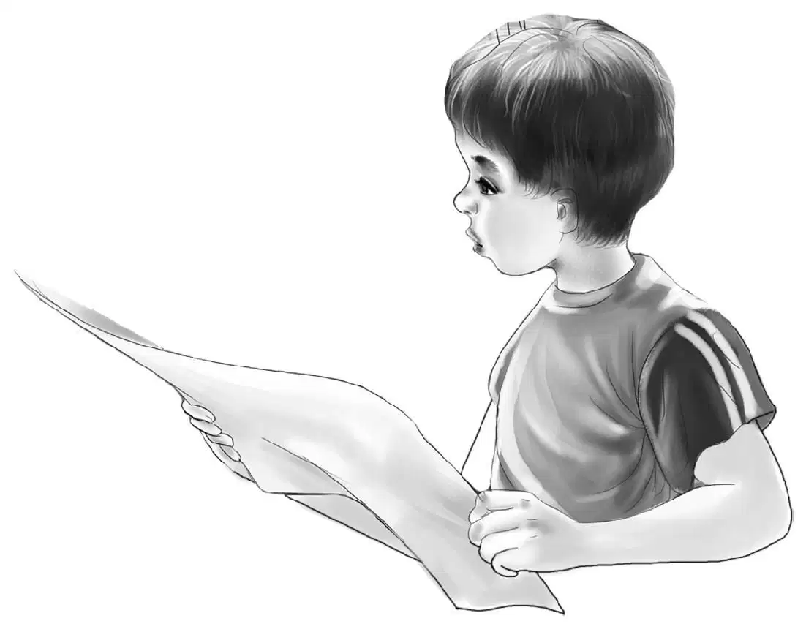
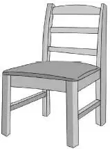
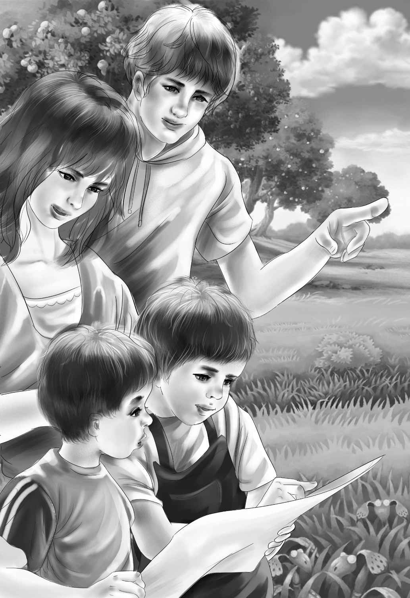
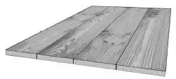
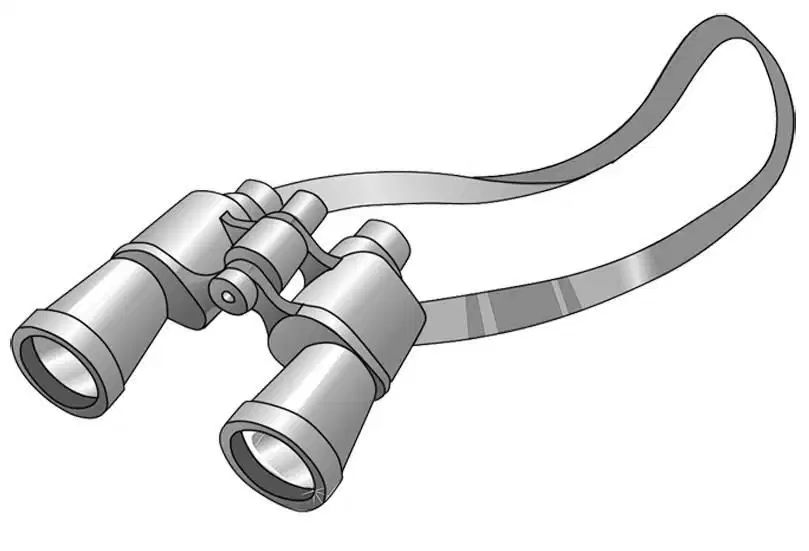

Jessie and Violet were putting on old clothes the next morning when Henry called, “I wonder what Mr. and Mrs. Beach will say about that tree house? Maybe they’ll say no. You know, they don’t even want the boys to go out of the yard.”
“That’s different, Henry,” said Benny. “I’ll bet they will say yes. The kids think so anyway.”
“They are lucky to have that big oak tree,” said Henry. “It’s just about perfect.”
Benny nodded. “I didn’t sleep a wink last night. I was planning how to build the floor. If it broke, everyone would fall down.”
Henry laughed. “You slept, Ben. But I know what you mean. I was thinking, too, and I drew a plan before you woke up.”
Just then Mrs. McGregor called, “Breakfast!”
While the Aldens were eating, they could see Jeffrey and Sammy running around their yard. They were carrying more boards for the tree house.
“It’s good to see those little guys run,” Benny said. “I didn’t know they could run. Remember?”
“We didn’t know they could even move,” said Jessie, laughing. “But they can do anything if they have a good reason.”
“Let’s not keep them waiting,”Henry said, pushing back his chair.
Benny said,“If they are carrying boards, probably their parents said yes.”
The Aldens went through the bushes to find the two boys waiting for them. They stood quietly, looking at the Aldens.
“What did your mom say about the tree house?”
Jeffrey answered, “She said, ‘I don’t care what you do, as long as you don’t go out of the yard.’”
“Well, then,” said Benny, “you can build the house, can’t you?”
“Yes, we can,” said Sammy, looking happier all of a sudden. “My dad is different. He made a little plan. He seemed to be interested. Jeffrey and I made plans, too. But I think Dad’s is the best.” He gave it to Henry.
“Now, let’s see,” Henry said, holding the plans so everyone could see. He looked at Jessie and laughed. “I guess Ben wasted his sleepless night. Mr. Beach’s plan is just perfect.”
The Aldens bent over to look at Mr. Beach’s drawing. The trunk of the tree made the back of the house.

“Now let’s look at the boys’ plan,” Henry said.
Everyone began to laugh. Jeffrey and Sammy had put in so many things they had forgotten the tree. There was a pail hanging on a pulley and a lunch basket hanging on a rope. There was a fine dinner bell by the door—only there wasn’t any door. The boys had drawn a peek hole in the roof, a lantern, and a mailbox. They had two hammocks for beds and a spyglass.
Henry said, “I guess you are right, Sammy. Your dad’s plan is the best of all. You put all the last things first—and the first things not at all.”
“Don’t feel sorry, boys,” Violet said quickly. “You aren’t so very old, you know, and your father is a scientist. He ought to draw a better plan than you can.”
Jeffrey said suddenly,“It’s really the tree that’s the best. When you look at all the other trees, you can see how good it is.”
“Right!” said Benny. “Jeffrey, you are exactly right. This tree couldn’t be better. Those big branches are almost level. We can just put the heavy floor beams across and they will stay without any nails.”
“We’ll nail them just the same,” Henry said. “By the way, how did your father know about the branches?”
“He came out with a flashlight after we had gone to bed,” said Sammy. “We saw the light. He just took one look and came right back in the house. He told us this morning, ‘That tree is just made for a tree house. I wish I could stay and help you build it.’ That’s what he said.”

“I wish he could, too,” Jeffrey said. “But of course he never has any time to play. He has to work even when he’s at home. Now let’s really begin, Henry.”
“Well, all right. Now Ben, you climb the tree. Then I’ll pass the heavy beams up to you. They are too heavy for Sam and Jeff.”
“It is awfully high,”Sammy said.“But of course not too high.”
Henry smiled because for Sammy it was a little too high.
Four long beams were soon resting on the lowest of the big branches. Henry himself nailed them safely in place. Then he showed Jeffrey and Sam how to lay the floorboards. The boards from the piano box were smooth and all the same length. They made a good floor.
“Now you boys have fun for yourselves. Put in a nice flat floor,” Henry said. Then he climbed down.
Sammy said, “Let’s put the nails in my basket and pull it up.” So after all, the basket on the rope was the first thing in the tree house instead of the last.

Jeffrey laid the boards and Sammy stayed by his side and gave him the nails one by one. Benny climbed down and handed up more floorboards. He called up to Sammy, “You can live there just as soon as you have a roof over your heads.”
“I think we can live here just as soon as we have a floor under our feet,” said Sammy.
Benny began to swing himself up the tree, holding onto the smaller of the lowest branches. Sammy looked up and watched him. He said, “I think we need a ladder. We’ll have to go up anddown lots of times,and the girls can’t climb anyway.”
“Oh, yes, they can! ” answered Benny.
Violet looked up and said, “I think we do need a ladder just the same. We can climb, but we can work faster with a ladder. And we want to get the house done.”
The Aldens turned to see Jeffrey running to the cellar for a ladder. That settled it.
Soon Henry went up the ladder and looked around. “This is certainly a big tree, Ben,” he said. “It can easily hold a house for four people.”
“Then we’ll come up, too,” Jeffrey called from the ground. He went up the ladder. His brother followed him.
“It’s nice up here,” said Jeffrey. “With all these big branches people can’t see us from the ground.”
Mr. McGregor had been mowing the Alden’s lawn and watching. He could see what a good time everyone was having. He called out, “You are doing a fine job, boys!”
Sammy called back, “Thanks, Mr. McGregor. You know, this is going to be a dandy floor. It’s going to have a wall-to-wall carpet.”
“Really?” Mr. McGregor stopped mowing.
“Yes, sir! We have an old rug in the cellar. We can cut it to fit.”
“A grand idea,” agreed Mr. McGregor. “Not many tree houses have carpets.”
But Jeffrey went on working on the floor, so Sammy stopped talking and handed him more nails.
Violet went up the ladder to look.“You are doing well,” she said. “You are real carpenters.”
In another hour the floor was done. “Now,” said Sammy, “I wish we had a spyglass.”
“So do I,” said Jeffrey. “I wonder if Uncle Max could tell us anything about the one that was lost.”
Henry and Jessie looked at each other. Jessie said, “Couldn’t you go on your bikes to see Uncle Max if we all went with you?”
“Maybe!” said Sammy, eagerly. “Wouldn’t that be fun—we haven’t used our bikes at all.”
“Ask your dad if you can go tomorrow,” said Benny. “Tell him we will take good care of you.”
Henry said, “Be sure to say we will be on the Shore Road, not on the highway. There isn’t much traffic.”
Jeffrey looked up. He said, “Dad knows that already. About the traffic, I mean. Mom and Dad think that is the trouble with Uncle Max’s restaurant. All the traffic goes on the state highway.”
“I see,” said Benny. “Not many people eat at the diner.”
Henry said, “I think we have done enough for today.”
“Then we have to pick up our tools,”said Sammy.
Benny laughed. “You’re the youngest, but you are the one to think of picking up the tools.”
Sammy replied, “If we don’t, we can’t use the tools. My dad says fine tools always get fine care.”
They all worked picking up the tools and boards.Then Henry started for home.He said, “Boys, remember to ask your father if you can go tomorrow. We can start rather early, and maybe put up the sides of the house when we get home.”

“Don’t worry,” said Sammy. “My dad won’t get in the door before I ask him.”
Jeffrey looked at Sammy and shook his head. “You know Dad doesn’t like to have us pester him. He’ll say no if you tease. Just ask him quietly, and then maybe he will let us go.”
“I won’t bother him,” Sammy promised. “I’ll just say please, and tell him the Aldens are going, too.”
“We don’t need to tell Dad anything about the spyglass,” Jeffrey said. “It might make him angry at Uncle Max all over again. I wonder if Uncle Max will know us. He hasn’t seen us for a long time.”
“He’s older than Dad,” said Sammy. “I think he will remember us if we tell him. And he’ll remember the spyglass, if Dad does.”
That same evening Benny said, “I wonder why those kids are so eager to have a spyglass.”
“I wonder, too,” said Violet. “But we all like different things. They seem to think a spyglass goes with a tree house. And it does, of course.”
Benny said, “I think it’s the mystery of the spyglass that gets them. They want the spyglass because it’s lost and they can’t find it. I’d like to find it myself.”